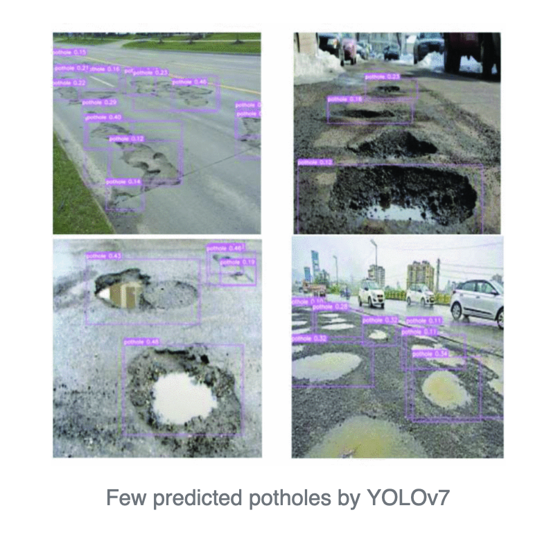

Pothole Detection | Recent Work
This section covers the recent work that has being done for pothole detection using different models
Overview:
In recent years, there has been a significant surge in research focusing on road conditions, encompassing challenges like potholes, manholes, sewer covers, and man hole detection. This heightened interest can largely be attributed to the ad-vancements in autonomous vehicle technologies, where the accurate mapping of road conditions holds paramount importance. Pothole detection methods have evolved alot
YOLOv7 is a cutting-edge real-time object detection model designed to deliver high-speed predictions with exceptional accuracy. In this application, YOLOv7 is utilized to detect road hazards, particularly potholes, in images or real-time video feeds. This technology can be instrumental in improving road safety and reducing accidents caused by poor road conditions.

YOLOv7 Model Architecture:
The core innovation in YOLOv7 is the E-ELAN (Extended Efficient Layer Aggregation Network) block. This block significantly enhances the network’s learning capacity by:
- Allowing for deeper architectures without losing efficiency.
- Employing operations such as expand, shuffle, and merge, which improve feature extraction from images.
- Ensuring that gradient flow remains intact, which is critical for training deep neural networks.
Group Convolutions are used in E-ELAN to increase both the channel size and block count, resulting in more robust feature learning. YOLOv7 reduces the number of parameters by about 40% and computation by 50% compared to earlier versions like YOLOv5, making it highly suitable for resource-constrained environments (such as edge devices in vehicles).
YOLOv7 Features for Real-Time Implementation:
YOLOv7’s efficiency and speed make it ideal for real-time pothole detection systems:
This is a paragraph explaining some key points:
- The pre-trained YOLOv7 weights allow for quick fine-tuning on smaller datasets like the Roboflow dataset without requiring extensive hardware.
- It can run on mobile GPUs or onboard vehicle systems, leveraging its lightweight architecture.
Challenges and Improvements:
Challenges:
- Variability in pothole appearance: Different sizes, shapes, and textures make it difficult to generalize across all cases
- Environmental conditions: Weather, lighting, and road type variations can affect detection accuracy.
Future Improvements:
This is a paragraph explaining some key points:
- Larger and more diverse datasets: To improve generalization across different road environments. Multi-class detection: Incorporating the detection of other road hazards like cracks, manholes, and speed bumps.
- Enhanced mAP scores: Through further tuning and architectural changes to better adapt to complex road conditions.